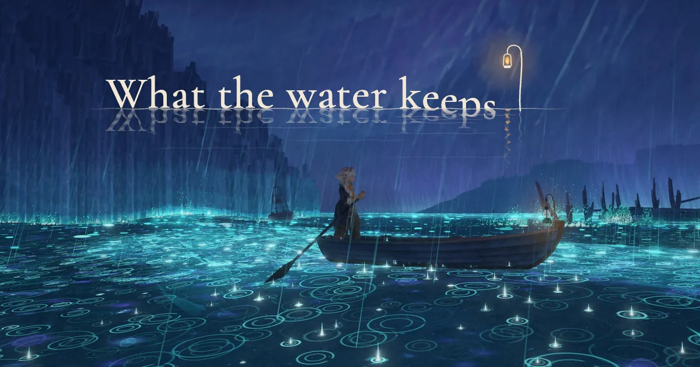
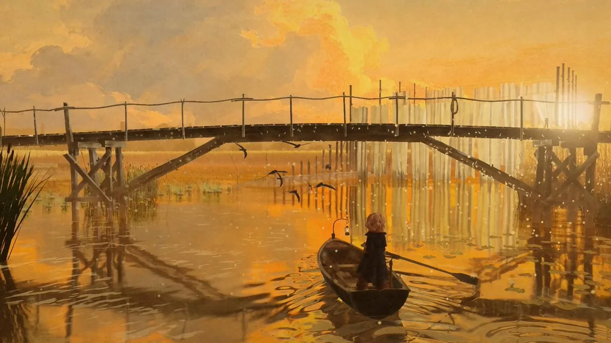

Kevin Ngo（@kevin_t_ngo）在 Claude Fable 5.2 发布后不久，放出一个可以在浏览器里玩的行船演示，名叫 What the water keeps（水所保存的）。他说这是 Fable 5.2 做成的：乘一只小船，穿过八个如梦的世界。站点自己的说明是：「一趟提着灯笼的慢船。你可以自己掌舵，沿一条开阔而安静的水道，穿过一连串彼此很不一样的境域；也可以随水流走。」同一天稍晚，Nori（@fuxun233）转了预告片，说 Claude 的审美一如既往地让人安心，并写「这是 GPT 一辈子都做不出来的内容」。本页以这件作品为中心，收录两位作者本人帖文的全文；预告片只有封面静帧，没有下载，也没有观看。

这是一件什么作品
就作者自己的说法，这是一个用 Claude Fable 5.2 写成的浏览器游戏演示：一条船，八个梦境，可以在网页里直接玩。这些归属是自报。本页打开过演示的公开首页，但没有把游戏玩完，也没有观看 57 秒的预告片，因此不能证明整段旅程是谁写的，也不能核对八个境域是否都已做成。⚠️
从公开首页的 HTML 可以确认的，是它的技术外形。页面标题与规范地址就是这部作品；它用 importmap 引入了内置的 three.js，以及 GLTF 加载器和一层后期处理。首境在资源清单里名为 landing，列有栈桥、芦苇、睡莲、鱼梁、船、灯与桨手等 glb 模型。加载卡片上写着首境约 144 个文件、约 24.9 MB（本页从同一份清单里数到 136 条路径，两个数字不完全相同，原因不明）。根路径下没有看到 LICENSE 或 README，页面源码里也没有许可证或仓库链接。
作者个人站 kevintngo.com 在 2026-11-10 的公开首页作品列表里，还没有收入这一件。演示托管页的 Last-Modified 是 2026-11-09 23:17 UTC（新加坡时间 11-10 07:17），比发帖晚约四小时，所以本页看到的是当时正在托管的构建，不一定等于发帖那一刻的版本。

作者怎么说
以下为作者英文短帖与本人回复的中文译文。主帖不是 X 长文。发出后约一秒，他补了一条游玩地址；之后在回复里谈到人物模型和音乐。
Claude Fable 5.2 做了这个游戏演示，可以在浏览器里玩。
这是一次乘船，穿过八个如梦的世界。
作者：Kevin Ngo @kevin_t_ngo；发布：2026-11-10 03:05（新加坡时间，UTC+8）。原帖附预告片，点击观看。主帖同时引用了 @claudeai 介绍 Fable 5.2 与 Mythos 5.2 的发布帖。
可以在这里玩：
Tripo 3D :)
这是对「船上那个人物的三维模型是怎么做的」的回答。查看这条回复。这只说了人物模型，没有说明场景里其他资产的来源。⚠️
谢谢！是的，预告片里的音乐是 Fable 5.2 写的，用的是 CC0 的乐器采样。
游戏里的音乐则是用 Suno v6 生成的。
查看这条回复。预告片与游戏内用了不同的配乐路径，这是作者自报；本页未听音频，也未见谱面或工程文件。⚠️
英文原文
Claude Fable 5.2 made this game demo, playable in the browser
It's a boat ride through 8 dreamlike worlds
You can play here:
https://what-the-water-keeps.vercel.app/
tripo 3d :)
thanks! yes, the music in the trailer is composed by fable 5.2, using cc0 instrument samples.
the music in the actual game was generated with suno v6
Nori 的引介
2026-11-10 15:19（新加坡时间，UTC+8），Nori（@fuxun233）发帖转了这段预告片。帖文不是引用转发，而是直接附上了 Kevin 原帖里的同一条视频。下面是他的原文，未改字：
Fable 5.2的作品，claude的审美一如既往的安心
这是GPT一辈子都做不出来的内容
查看这条引介。有人问「一辈子都做不出来」具体差在哪里，他答「审美，毫无疑问」。另有人说字体搭配和排版总是很干净，看着留白就觉得舒服，他回「确实」。这些都是看过预告片的人的观感；本页未观看视频，不能替他们确认字体或留白。⚠️
许可与可复现性
演示可以公开游玩，但 2026-11-10 在站点根路径检查 LICENSE、LICENSE.md、LICENSE.txt 与 README，均为 404；首页 HTML 里没有许可证、版权声明或 GitHub 链接。作者没有在可见回复里给出源码仓库。内置的 three.js 是常见的 MIT 组件，只说明引擎本身的许可，不能外推到这件作品。按版权分级，本页只做导读，并收录作者本人短帖的全文中译；不转载视频，也不把演示页的模型、贴图或音乐收进本站。
传播数据（快照）
2026-11-10 经 X 接口读取时，Kevin 的原帖约 30.2 万次浏览、3400 个赞、154 次转发、128 条回复、1331 次收藏，引用 73 次。预告片播放次数当时约 12.3 万。Nori 的引介帖约 1603 次浏览、18 个赞、8 次收藏、3 条回复。这些数字会变，只作当时记录，不是效果评测。
核实边界与署名
- 这是以《What the water keeps》为中心的导读。用户发来的是 @fuxun233 的引介帖；作品与预告片的作者是 Kevin Ngo @kevin_t_ngo。
- 「Fable 5.2 做成」「八个如梦的世界」「人物模型来自 Tripo 3D」「预告片配乐由 Fable 5.2 写、用 CC0 采样；游戏内音乐由 Suno v6 生成」均为作者自报，⚠️ 未用完整源码或音频工程核对。
- three.js、首境名为 landing、以及加载卡片上的文件数与体积，来自 2026-11-10 打开的公开首页 HTML，可以核对；本页没有枚举其余七个境域，也没有把游戏玩完。
- ⚠️ 未下载或观看约 57 秒的预告片。封面帧与官方分享图只代表两帧静帧，不能代替完整演示。
- Nori 关于审美、以及评论区对字体与留白的判断，是他人观感，本页未亲自看片验证。